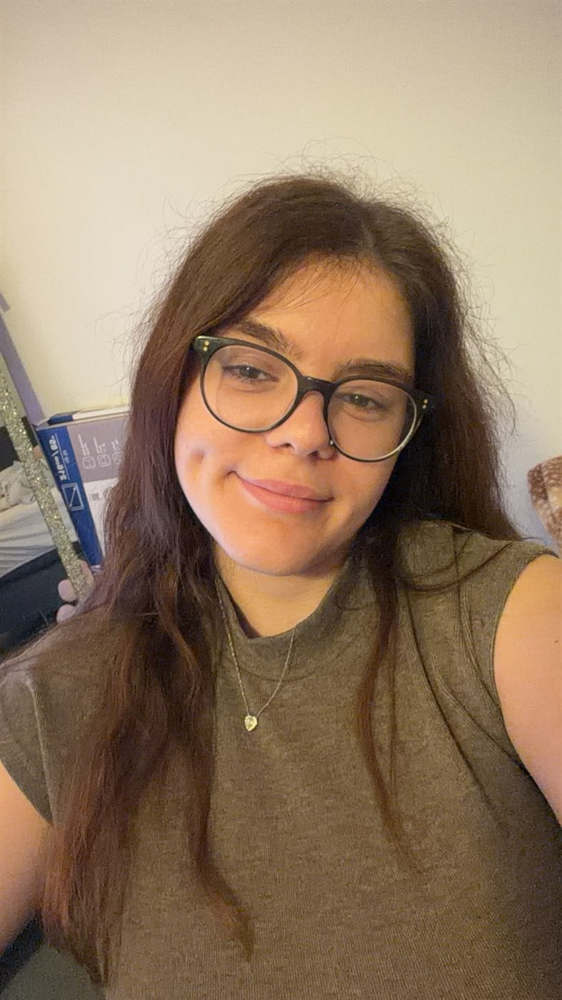
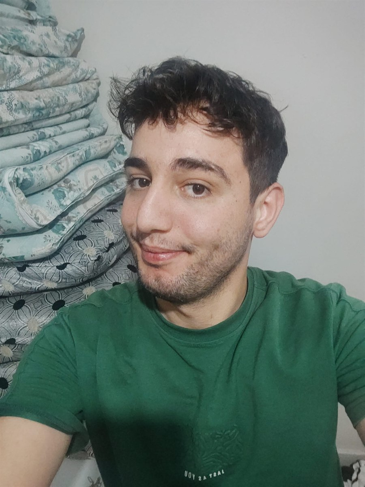
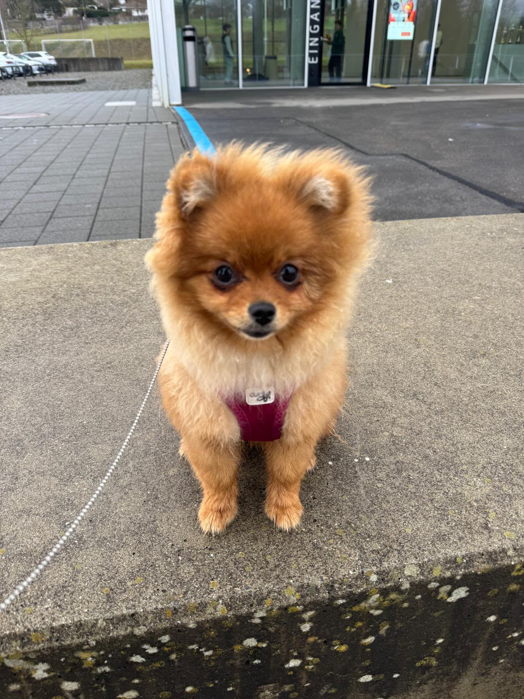

Besjana arbeitet in einem kleinen Berghotel in der Schweiz als Kellnerin.
Jeden Abend geht sie mit Leona spazieren. Doch nach der Spätschicht ist sie so müde, dass sie kaum noch antworten kann.
Ich, Fırat, kann ohne sie keine Nacht mehr schlafen. Also mache ich mich auf den Weg durch Schnee und Dunkelheit – nur um sie zu sehen.



Gece boyunca aldığın bütün aramalar.
Yolda parça parça bulduğun dizeler.
Soğuk ve uykusuzluk seni yere serdi. Ama bu macera bitmedi — bir nefes al, yeniden başla.